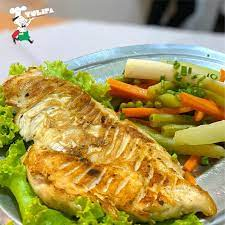
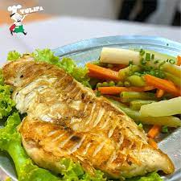

- Filet
- A Milanesa
- Empanado sem acompanhamento
- A Parmegiana
- Filé empanado com mussarela, molho sugo, ervilha e parmessão ralado
- A Cavalo
- Grelhado com 2 ovos
- A cubana
- Filé com banan e milanesa, fritas, ervilha e enfeite de palmito
- Cruzeiro
- Filé grelhado, risoto de frango, fritas e farofa
- Tulipa
- Filé grelhado, arroz, fritas e molho ao sugo
- A Francesa
- Filé grelhado, fritas 1(um) ovo estalado, presunto e ervilha na manteiga
- Picanha
- A Rio Grande
- Grelhada com arroz, farofa e vinagrete
- A Jardineira
- Grelhada com legumes na manteiga, vagem, cenoura,chuchu, ervilha, batata cozita
- A Brasileira
- Grelhada com arroz cheiroso, farofa, fritas e duas fatias de bacon
- Churrasco
- A Gaúcha
- 3(três) pedaços, arroz, farofa e vinagrete
- Misto
- 4 pedaços, arroz, farofa e vinagrete
- A Moda
- 2 pedaços, arroz, farofa e vinagrete
- Massas
- Ao sugo
- Molho de tomate
- Alho e Óleo
- Alho frito no azeite
- A Bolonhesa
- Molho de carne moída
- Parisiense
- Palmito, ervilha,presunto, frango desfiado e uva passa
- Saladas
- Simples
- Alface, tomate e cebola
- Completa
- ALface, tomate, cebola, vagem, chuchu, batata cozida, ovo cozido.
- Palmito
- Somente Palmito